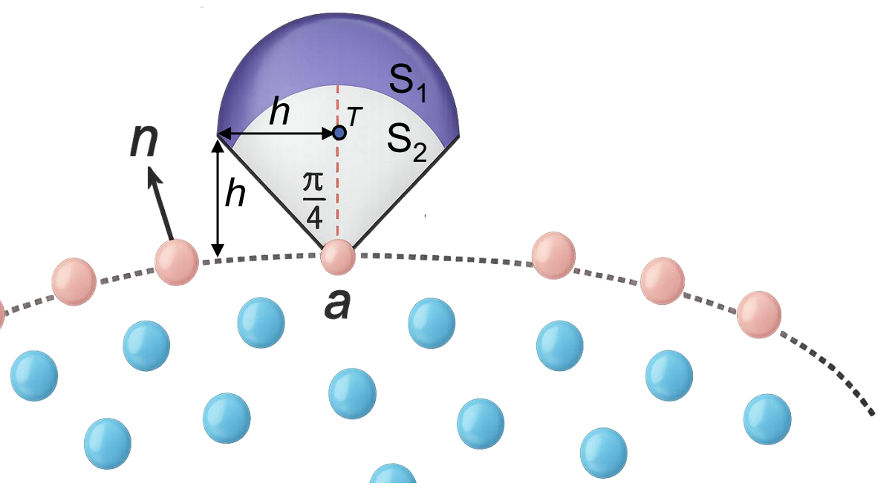
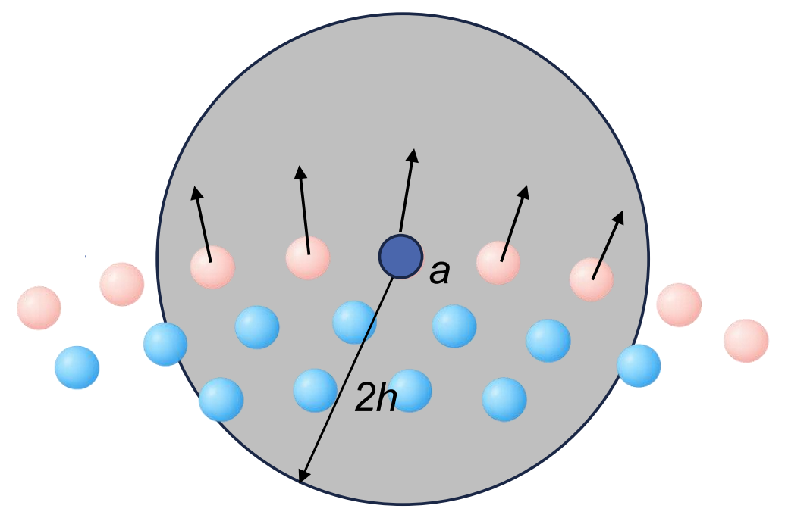

Advanced shifting¶
Under review by Francesco Ricci and Renato Vacondio
Particle regularisation, free-surface treatment, ALE transport corrections and non-conservative pressure in DualSPHysics v6.
Purpose and choice of method¶
Particle shifting introduces a numerical displacement to regularise the SPH particle distribution. In a fully Lagrangian calculation, particles follow the fluid motion and can develop irregular spacing, which affects the approximation of spatial operators. Shifting changes their computational positions to address this distribution error. The shift is distinct from the physical fluid velocity and from a change to prescribed wall motion.
DualSPHysics distinguishes standard shifting from Advanced Shifting. The advanced method uses a concentration-gradient displacement with a different diffusion scaling, geometric identification of the free surface and treatment of particles near that surface. Optional Arbitrary Lagrangian–Eulerian (ALE) corrections account for the difference between material and particle transport velocities. The non-conservative pressure option changes the pressure-gradient operator and its conservation properties.
These functions are distinct from density diffusion, divergence cleaning, boundary reconstruction and structural hourglass suppression. Their parameters cannot be substituted for one another simply because each addresses a numerical error.
Shifting |
Current XML meaning | Configuration family |
|---|---|---|
| 0 | No shifting | Default when no shifting model is selected |
| 1 | Ignore boundary | Standard shifting; suppresses shifts near boundary particles |
| 2 | Ignore fixed boundary | Standard shifting; suppresses shifts near fixed boundaries |
| 3 | Full standard shifting | Standard coefficient and free-surface threshold |
| 4 | Full advanced shifting | Advanced coefficient, ALE and non-conservative-pressure options |
The selector remains numeric in v6. Advanced parameters do not activate the method unless the selected mode is 4, and they are not used by the standard modes. The word full does not remove the advanced method's free-surface, boundary and displacement restrictions.
Concentration-gradient displacement¶
The formulation presented by Lind et al. expresses the basic shift as
Here \(C_a\) is particle concentration, \(W_{ab}\) is the smoothing kernel, \(V_b\) is neighbour volume and \(h\) is smoothing length. The displacement follows the negative concentration gradient. \(A\) is a positive dimensionless magnitude in this theoretical expression. \(D\) has units of length squared in this per-update displacement formula; it is not the physical viscosity.
The standard Skillen scaling shown for comparison is
The dependence on fluid speed and time step differs from \(A h^2\). Consequently, the standard value ShiftCoef=-2 and the advanced value ShiftAdvCoef=-0.01 are not interchangeable coefficients.
Strength, sign and implementation limits¶
The documented advanced coefficient is negative: the default is ShiftAdvCoef=-0.01. The original XML Guide discusses values from −0.1 for flows with strong velocity gradients to −0.01. These are source recommendations, rather than a tested admissible range or an instruction to choose the larger magnitude for every flow. In the theoretical expression, the minus sign is written separately and \(A\) is positive. Preserve the negative XML convention instead of copying positive \(A\) directly into a case.
The current CPU and GPU calculation forms a negative magnitude using the absolute coefficient. It also limits the shift using a density-variation measure and distance to the free surface, then caps the computed displacement magnitude at 0.1 times the initial particle spacing, dp, before converting it to a shifting velocity. Thus \(D=A h^2\) describes the base scaling rather than every limiter in the implementation. Reversing the sign of the XML coefficient must not be assumed to reverse the displacement.
The calculation uses the time increment when forming its velocity correction. The absence of an explicit time step in \(A h^2\) does not make the complete algorithm independent of time integration. A 2D calculation suppresses the out-of-plane y component. The current implementation rejects Advanced Shifting with Verlet; retain the complete source case's Symplectic selection.
Free-surface detection and normals¶
Candidate screening and the umbrella region¶
A truncated neighbourhood near a free surface can produce a concentration gradient even when the particle distribution is physically appropriate. Unrestricted shifting in the surface-normal direction would then move the interface artificially. Advanced Shifting first identifies surface candidates and scans an umbrella region oriented along an estimated outward normal. The presence of neighbours in that region distinguishes an interior particle from one adjacent to an empty region. The search includes the surrounding particle neighbourhood and its boundary context.
The current advanced screening uses position-divergence thresholds of 1.7 in 2D and 2.75 in 3D, with further screening and the umbrella test. These are internal criteria, not a new XML parameter range. ShiftTFS belongs to the standard configuration and does not control these Advanced Shifting thresholds, even when retained in a complete case's parameter list.

Corrected and smoothed normals¶
A corrected concentration gradient supplies the initial normal:
\(\mathbf{L}_a\) is the Bonet–Lok correction matrix. For particles interacting with the free surface, the formulation averages surface-particle normals using kernel and volume weights:
\(\Omega_F\) denotes the free-surface particles. The current reconstruction normalises the weighted direction for projection. This surface normal is a fluid-neighbourhood quantity. It is not the displacement vector from a solid boundary particle to the wall surface used by mDBC.

Tangential shifting and exclusions¶
For the surface treatment described by the formulation, the tangential projection is
The near-surface treatment reduces the normal component according to distance from the free surface. The current implementation makes an important distinction: surface and near-surface particles receive this projected shift when ALE is active; without ALE their shift is set to zero. Interior particles retain the applicable limited shift. Enabling Advanced Shifting alone must therefore not be described as applying the same tangential treatment in both configurations.
Particles classified for exclusion receive no shift. Boundary proximity can exclude near-surface particles, and surface particles interacting with a boundary or showing a large change in normal direction can have their shift suppressed. Geometry, resolution and available neighbours therefore affect the applied displacement. The projection is not an unconditional instruction to move every particle next to a wall.
ALE transport and conservation¶
Material and transport velocities¶
Let \(\mathbf{u}\) denote physical fluid velocity and \(\widehat{\mathbf{u}}\) the numerical shifting velocity. The workshop defines
\(\mathbf{u}_0\) is the transport velocity of computational particles. For a scalar \(\phi\), the material and ALE derivatives satisfy
This distinction generates additional advection terms in continuity and momentum. In the workshop's continuum notation,
Here \(\rho\) is density, \(P\) pressure, \(\boldsymbol{\Gamma}\) the viscous contribution and \(\mathbf{f}\) body-force acceleration. The ALE terms account for computational transport; they do not represent an additional physical fluid velocity imposed by an inlet or moving wall.
Continuity and momentum corrections¶
The continuity equation separates a transport-divergence term and a density flux:
The documented SPH operators for these terms are
The corresponding momentum correction separates a tensor flux and the divergence of shifting velocity:
The dots retain the pressure, viscous and body-force contributions outside the displayed ALE correction. The tensor product is denoted by \(\otimes\). The workshop associates the symmetric density-flux term with mass conservation and the symmetric momentum-flux term with linear-momentum conservation, while explicitly distinguishing angular momentum. These properties concern the stated operators; they do not establish exact volume conservation or conservation of every quantity for arbitrary boundaries, finite resolution or a separately selected non-conservative pressure operator.
The wave study below reports improved volume conservation with Advanced Shifting plus ALE relative to standard shifting under its test conditions. It does not provide a universal stability or accuracy guarantee.
Non-conservative pressure formulation¶
The optional pressure treatment uses a corrected pressure-difference gradient for interior fluid particles and retains a symmetric pressure sum near the free surface. In the XML Guide's notation,
Here \(\mathbf{v}\) denotes the same material velocity as \(\mathbf{u}\) above, and lower-case \(p\) denotes pressure. \(\Omega_F\), \(\Omega_{NF}\) and \(\Omega_I\) identify free-surface, near-free-surface and interior particles. In the interior branch, the matrix acts on the kernel gradient; the near-surface branch is the scalar symmetric pressure sum. \(\boldsymbol{\Pi}_a\) collects the viscous contribution in this source notation, and \(\mathbf{f}_a\) denotes body-force acceleration. The pressure expression does not replace separate ALE transport corrections.
The corrected interior operator improves first-order consistency in the documented formulation, but it is non-conservative. The implementation also checks particle classification and neighbourhood support before using its interior correction; selecting the option does not force that operator at an under-supported free surface.
The workshop's documented configuration combines non-conservative pressure with Advanced Shifting and ALE. Use Shifting=4, ShiftAdvALE=Y and ShiftAdvNCPress=Y for that combined configuration. The current reader stores the ALE and pressure flags independently and does not reject every ALE=N, NCPress=Y combination. Reader acceptance alone therefore does not establish the documented combination or its numerical suitability.
XML hierarchy and parameter reference¶
The controls belong in case/execution/parameters as parameter elements. There is no dedicated ShiftingAdv XML wrapper. The standard/local configuration under case/execution/special/shifting belongs to another implementation: the current reader rejects its combination with Advanced Shifting, so its shiftingzone, coefficient and fsthreshold elements must not be copied into an advanced example.
| Parameter | v6 values / documented default | Interpretation |
|---|---|---|
Shifting |
Numeric 0–4; default 0 | Select 4 for Advanced Shifting |
ShiftAdvCoef |
Default −0.01 | Dimensionless advanced coefficient; assess the source case's choice |
ShiftAdvALE |
Y / N; default N |
ALE corrective terms for Advanced Shifting |
ShiftAdvNCPress |
Y / N; default N |
Non-conservative pressure for Advanced Shifting |
StepAlgorithm |
SYM / VER; default SYM |
Advanced Shifting requires Symplectic; Verlet is rejected |
Use the exact names ShiftAdvALE and ShiftAdvNCPress. Older documentation uses numeric 1/0 switches; the current v6 format uses Y/N. This four-parameter configuration retains the original XML Guide's selection of ALE and non-conservative pressure with coefficient −0.01, using the current format and the same settings in the non-conservative wave example.
XML excerpt — combined activation. XML location: case/execution/parameters. Current supporting case: examples/shiftingadv/04_WavesDampingNC/CasePistonDampingAdvALENC_Def.xml. Retain its complete case configuration.
<parameter key="Shifting" value="4" comment="Shifting mode 0:None, 1:Ignore bound, 2:Ignore fixed, 3:Full, 4:Full advanced (default=0)" />
<parameter key="ShiftAdvCoef" value="-0.01" comment="Coefficient for advanced shifting computation (default=-0.01)" />
<parameter key="ShiftAdvALE" value="Y" comment="ALE formulation for advanced shifting: Y/N (default=N)" />
<parameter key="ShiftAdvNCPress" value="Y" comment="Non conservative pressure formulation for advanced shifting: Y/N (default=N)" />
XML excerpt — symplectic-selection. XML location: case/execution/parameters. Source: examples/shiftingadv/01_WavesDamping/CasePistonDampingAdvALE_Def.xml. This selection requires the surrounding source case and its other settings.
<parameter key="StepAlgorithm" value="SYM" comment="Step Algorithm: SYM:Symplectic, VER:Verlet (default=SYM)" />
Standard controls retained in complete cases¶
ShiftCoef and ShiftTFS configure standard shifting, not the advanced coefficient or advanced surface detection. A migrated case may retain both standard and advanced parameters. Their presence is not evidence that both algorithms operate simultaneously. The standard wave configuration uses this independent selection:
XML excerpt — standard-wave-shifting. XML location: case/execution/parameters. Source: examples/shiftingadv/01_WavesDamping/CasePistonDampingSkillen_Def.xml. This selection requires the surrounding source case and its other settings.
<parameter key="Shifting" value="3" comment="Shifting mode 0:None, 1:Ignore bound, 2:Ignore fixed, 3:Full, 4:Full advanced (default=0)" />
<parameter key="ShiftCoef" value="-2" comment="Coefficient for standard shifting computation (default=-2)" />
<parameter key="ShiftTFS" value="1.5" comment="Threshold to detect free surface. Typically 1.5 for 2D and 2.75 for 3D (default=0)" />
Its threshold 1.5 is a 2D source-case setting. The 3D standard dam-break case uses 2.75. Neither threshold becomes an Advanced Shifting surface-detection control.
Practical configurations¶
Each excerpt is a selection from one actual case. Keep its geometry, boundary normals, motion/input files, wave generation, damping and solver settings together. None of the selections constitutes a standalone executable case or a newly combined configuration.
Regular waves with damping¶
examples/shiftingadv/01_WavesDamping contains separate standard and Advanced Shifting plus ALE configurations. Both use dp = 0.015 m and h/dp = 2. The wave paddle specifies depth 0.66 m, wave height 0.15 m and period 2 s. Damping at the far end of the tank is separate from shifting. The advanced case selects:
XML excerpt — wave-advanced-ale. XML location: case/execution/parameters. Source: examples/shiftingadv/01_WavesDamping/CasePistonDampingAdvALE_Def.xml. This selection requires the surrounding source case and its other settings.
<parameter key="Shifting" value="4" comment="Shifting mode 0:None, 1:Ignore bound, 2:Ignore fixed, 3:Full, 4:Full advanced (default=0)" />
<parameter key="ShiftAdvCoef" value="-0.01" comment="Coefficient for advanced shifting computation (default=-0.01)" />
<parameter key="ShiftAdvALE" value="Y" comment="ALE formulation for advanced shifting: Y/N (default=N)" />
<parameter key="ShiftAdvNCPress" value="N" comment="Non conservative pressure formulation for advanced shifting: Y/N (default=N)" />
XML excerpt — wave-generation. XML location: case/execution/special. Source: examples/shiftingadv/01_WavesDamping/CasePistonDampingAdvALE_Def.xml. This selection requires the surrounding source case and its other settings.
<wavepaddles active="#VResId==0" >
<piston>
<mkbound value="10" comment="Mk-Bound of selected particles" />
<waveorder value="2" comment="Order wave generation 1:1st order, 2:2nd order (def=1)" />
<start value="0" comment="Start time (def=0)" />
<duration value="0" comment="Movement duration, Zero is the end of simulation (def=0)" />
<depth value="0.66" comment="Fluid depth (def=0)" />
<pistondir x="1" y="0" z="0" comment="Movement direction (def=(1,0,0))" />
<waveheight value="0.15" comment="Wave height" />
<waveperiod value="2" comment="Wave period" />
<phase value="0" comment="Initial wave phase in function of PI (def=0)" />
<ramp value="1" comment="Periods of ramp (def=0)" />
<savemotion periods="20" periodsteps="20" xpos="6.0" zpos="-0.26" comment="Saves motion data. xpos and zpos are optional. zpos=-depth of the measuring point" />
</piston>
</wavepaddles>
The source's active="#VResId==0" expression controls wave-paddle ownership. It is retained exactly and does not define a new shifting region. ALE is active while non-conservative pressure is inactive; selecting mode 4 does not enable every advanced option automatically.
Moving-tank sloshing¶
examples/shiftingadv/02_Sloshing compares standard and Advanced Shifting plus ALE cases using dp = 0.002 m and h/dp = 2. The tank rotates according to SloshingMotionData.dat; numerical shifting must not replace prescribed boundary motion.
XML excerpt — sloshing-advanced-ale. XML location: case/execution/parameters. Source: examples/shiftingadv/02_Sloshing/CaseSloshingAdvALE_Def.xml. This selection requires the surrounding source case and its other settings.
<parameter key="Shifting" value="4" comment="Shifting mode 0:None, 1:Ignore bound, 2:Ignore fixed, 3:Full, 4:Full advanced (default=0)" />
<parameter key="ShiftAdvCoef" value="-0.01" comment="Coefficient for advanced shifting computation (default=-0.01)" />
<parameter key="ShiftAdvALE" value="Y" comment="ALE formulation for advanced shifting: Y/N (default=N)" />
<parameter key="ShiftAdvNCPress" value="N" comment="Non conservative pressure formulation for advanced shifting: Y/N (default=N)" />
XML excerpt — sloshing-motion. XML location: case/casedef. Source: examples/shiftingadv/02_Sloshing/CaseSloshingAdvALE_Def.xml. This selection requires the surrounding source case and its other settings.
<motion>
<objreal ref="0">
<begin mov="1" start="0" finish="100" />
<mvrotfile id="1" duration="100" anglesunits="degrees">
<file name="SloshingMotionData.dat" />
<axisp1 x="0" y="-1" z="0" />
<axisp2 x="0" y="1" z="0" />
</mvrotfile>
</objreal>
</motion>
The standard case uses Shifting=3, ShiftCoef=-2 and ShiftTFS=1.5. Its advanced parameters remain inactive under that selector. Retain the selected case's mDBC normal generation and complete numerical settings.
Three-dimensional dam break¶
examples/shiftingadv/03_Dambreak provides standard and Advanced Shifting plus ALE inputs with dp = 0.02 m and h/dp = 1.5. The advanced case retains its specific SlipMode=M22; it must not be changed to match the wave or sloshing case for consistency of presentation.
XML excerpt — dambreak-advanced-ale. XML location: case/execution/parameters. Source: examples/shiftingadv/03_Dambreak/CaseDamBreak3DAdvALE_Def.xml. This selection requires the surrounding source case and its other settings.
<parameter key="Shifting" value="4" comment="Shifting mode 0:None, 1:Ignore bound, 2:Ignore fixed, 3:Full, 4:Full advanced (default=0)" />
<parameter key="ShiftAdvCoef" value="-0.01" comment="Coefficient for advanced shifting computation (default=-0.01)" />
<parameter key="ShiftAdvALE" value="Y" comment="ALE formulation for advanced shifting: Y/N (default=N)" />
<parameter key="ShiftAdvNCPress" value="N" comment="Non conservative pressure formulation for advanced shifting: Y/N (default=N)" />
XML excerpt — dambreak-boundary. XML location: case/execution/parameters. Source: examples/shiftingadv/03_Dambreak/CaseDamBreak3DAdvALE_Def.xml. This selection requires the surrounding source case and its other settings.
<parameter key="Boundary" value="mDBC" comment="Boundary method: DBC, mDBC, MIX:MixBC (default=DBC)" />
<parameter key="SlipMode" value="M22" comment="Slip mode for mDBC: NS:No-slip, FS:Free slip, V0:TanVel=0, M22:mDBC 2022 (default=NS)" />
The standard input uses Shifting=3 and ShiftTFS=2.75. The advanced input's retained ShiftTFS=0 does not disable its internal geometric surface detection.
Waves with non-conservative pressure¶
examples/shiftingadv/04_WavesDampingNC/CasePistonDampingAdvALENC_Def.xml uses dp = 0.03 m, h/dp = 1.3 and the combined activation above: mode 4, coefficient −0.01, ALE Y and non-conservative pressure Y. Its smoothing-length setting is:
XML excerpt — nc-smoothing-length. XML location: case/casedef/constantsdef. Source: examples/shiftingadv/04_WavesDampingNC/CasePistonDampingAdvALENC_Def.xml. This selection requires the surrounding source case and its other settings.
The separate CasePistonDamping_Def.xml selects no shifting; its filename must not be interpreted as an enabled standard-shifting case:
XML excerpt — nc-comparison-no-shifting. XML location: case/execution/parameters. Source: examples/shiftingadv/04_WavesDampingNC/CasePistonDamping_Def.xml. This selection requires the surrounding source case and its other settings.
<parameter key="Shifting" value="0" comment="Shifting mode 0:None, 1:Ignore bound, 2:Ignore fixed, 3:Full, 4:Full advanced (default=0)" />
| Current family / input | dp (m) | h/dp | Shifting | ALE | NC pressure |
|---|---|---|---|---|---|
01_WavesDamping/CasePistonDampingSkillen_Def.xml |
0.015 | 2 | 3 | N | N |
01_WavesDamping/CasePistonDampingAdvALE_Def.xml |
0.015 | 2 | 4 | Y | N |
02_Sloshing/CaseSloshingSkillen_Def.xml |
0.002 | 2 | 3 | N | N |
02_Sloshing/CaseSloshingAdvALE_Def.xml |
0.002 | 2 | 4 | Y | N |
03_Dambreak/CaseDamBreak3D_Def.xml |
0.02 | 1.5 | 3 | N | N |
03_Dambreak/CaseDamBreak3DAdvALE_Def.xml |
0.02 | 1.5 | 4 | Y | N |
04_WavesDampingNC/CasePistonDamping_Def.xml |
0.03 | 1.3 | 0 | N | N |
04_WavesDampingNC/CasePistonDampingAdvALENC_Def.xml |
0.03 | 1.3 | 4 | Y | Y |
These are the source inputs' choices. They do not establish equivalence between configurations or that changing only a shifting selector would reproduce a published result.
The third absolute particle spacing printed in the workshop setup, 0.075 m, is inconsistent with its ordered resolution series and the stated 20 particles per wave height. That spacing should not be adopted as a verified recipe or silently replaced by a guessed value.
A smaller h/dp changes neighbour support and must be assessed with the selected kernel, resolution and pressure treatment.
Interactions and scope limits¶
Solid boundaries and mDBC¶
Free-surface normals are reconstructed from the fluid neighbourhood. mDBC normals instead encode the geometry between solid boundary particles and the physical wall. Advanced Shifting neither generates those wall normals nor changes a selected slip condition. The wave and sloshing inputs use SlipMode=NS; the dam-break pair uses M22. Preserve each configuration. See the mDBC XML Guide for its geometry and boundary settings.
Inlet/Outlet¶
Open-boundary buffer particles have their own imposed or reconstructed kinematics. The current corrector restores their zone-prescribed motion after the ordinary shift contribution is formed. The interior-fluid displacement rule must not be read as an instruction to shift buffer particles independently of their inlet/outlet treatment. See Inlet/Outlet. These implementation relationships do not certify every possible combination of shifting and open-boundary options.
Variable resolution¶
The variable-resolution workshop specifically recommends Advanced Shifting for its wave examples. The non-conservative pressure discussion emphasises corrected interior consistency when resolution varies. Advanced Shifting, ALE, pressure discretisation and refinement geometry remain separate modelling choices; none replaces a valid refinement/buffer arrangement. See Variable resolution for its domain hierarchy and case-specific settings. A successful XML read alone cannot establish numerical suitability across an interface.
Review of a selected configuration¶
Assess particle distribution, free-surface position, conservation behaviour and resolution under the intended loading. Keep shifting strength, integration, kernel support and boundary treatment consistent with the selected case. The source comparisons do not establish physical validation, long-time stability or a universal error reduction for all simulations. Structural dynamics and other regularisation methods retain their independent numerical settings.
References¶
The formulation and implementation discussion draws on the DualSPHysics Advanced Shifting XML Guide (March 2025) and the 8th DualSPHysics Workshop presentation on ALE-SPH and non-conservative pressure (2026).
- Lind et al. (2012), Incompressible smoothed particle hydrodynamics for free-surface flows: A generalised diffusion-based algorithm for stability and validations for impulsive flows and propagating waves, Journal of Computational Physics 231, 1499–1523.
- Skillen et al. (2013), the standard-shifting formulation cited in the DualSPHysics implementation, Computer Methods in Applied Mechanics and Engineering. DOI.
- Marrone et al. (2010), Fast free-surface detection and level-set function definition in SPH solvers, Journal of Computational Physics 229, 3652–3663.
- Oger et al. (2016), SPH accuracy improvement through the combination of a quasi-Lagrangian shifting transport velocity and consistent ALE formalisms, Journal of Computational Physics 313, 76–98.
- Oger et al. (2007), An improved SPH method: Towards higher order convergence, Journal of Computational Physics 225, 1472–1492.
- Michel et al. (2023), A regularized high-order diffusive smoothed particle hydrodynamics scheme without tensile instability, Physics of Fluids 35.
- Bonet and Lok (1999), Variational and momentum preservation aspects of smooth particle hydrodynamic formulations, Computer Methods in Applied Mechanics and Engineering 180, 97–115.
For the practical families and original videos, see the Advanced Shifting Examples Catalogue.
Full Advanced Shifting XML format reference¶
Advanced Shifting is configured through the general execution parameters in doc/xml_format/_FmtXML__Parameters.xml. The package does not provide a separate complete Advanced Shifting format file. The full generic parameter file includes unrelated solver settings and is therefore not reproduced as a dedicated advanced reference.
The following is the exact selection of Advanced Shifting-related entries from that general format. Its Shifting=0 is the documented default and leaves shifting inactive; it must not replace the mode 4 activation example indiscriminately.
XML excerpt — format-parameter-selection. XML location: case/execution/parameters. Source: doc/xml_format/_FmtXML__Parameters.xml. This selection requires the surrounding source case and its other settings.
<parameter key="Shifting" value="0" comment="Shifting mode 0:None, 1:Ignore bound, 2:Ignore fixed, 3:Full, 4:Full advanced (default=0)" />
<parameter key="ShiftAdvCoef" value="-0.01" comment="Coefficient for advanced shifting computation (default=-0.01)" />
<parameter key="ShiftAdvALE" value="N" comment="ALE formulation for advanced shifting: Y/N (default=N)" />
<parameter key="ShiftAdvNCPress" value="N" comment="Non conservative pressure formulation for advanced shifting: Y/N (default=N)" />
doc/xml_format/_FmtXML_Shifting.xml documents standard/local shifting and its zones. It is not a complete Advanced Shifting reference and its hierarchy must not be combined with mode 4. The parameter tables and source-specific excerpts describe the verified advanced interface without presenting an unrelated format collection as an executable case.